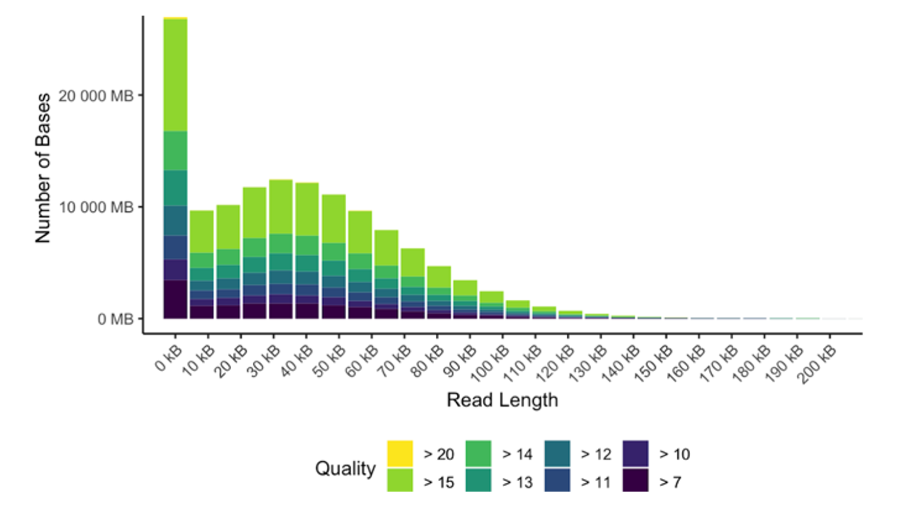

The University of Washington Nanopore Sequencing Core provides DNA and RNA sequencing services on the Oxford Nanopore Technologies (ONT) platform. For collaborators, we perform library preparation and sequencing from a variety of sample inputs, including blood, saliva, buccal swab, cell pellet, and direct DNA or RNA submissions.
This page provides detailed information on available services and on how to prepare, package, and ship your samples. Before submitting samples, we ask that you please contact us for a consultation.
Overview of our Sample Submission Process:
Nanopore sequencing is a third-generation sequencing technology that allows for analysis of DNA and RNA sequences without amplification. As nucleic acids pass through protein nanopores, changes in electric current are detected and subsequently decoded into bases, preserving methylation and modifications to the original sequences. With the GridION and PromethION instruments, we generate high-quality datasets with average read lengths of 10–60 kb, suitable for many long-read applications such as de novo assembly, structural variant discovery, splice variant discovery, and methylation analysis.
We offer genome sequencing on the GridION and PromethION platforms. Similar read lengths are achievable on both platforms. Libraries sequenced on the GridION platform require lower input material and typically produce 10–30 Gbase sequence datasets. When higher throughput is required, the PromethION platform is a more robust option. PromethION libraries may produce more than 120 Gbase datasets (~40x coverage of the human genome).
We almost always recommend whole-genome over targeted sequencing, however in select instances, targeted sequencing might be preferred. During your consultation, we will discuss with you if this technology might fit your needs.
[Description/Figure here]
We can help you determine which sequencing platform is right for your project. Contact us to set up a consultation and estimate.
| Service | Internal Rate* | External Rate | |
|---|---|---|---|
| 1 | Sequencing materials and time on the PromethION | $956.13 | $1,135.11 |
| 2 | Sequencing materials and time on the GridION | $1,079.18 | $1,281.20 |
| 3 | Sample QC | $126.56 | $150.25 |
| 4 | HMW gDNA Extraction from Blood or Cells | $157.41 | $186.87 |
| 5 | HMW gDNA Extraction from Saliva | $280.56 | $333.08 |
| 6 | RNA Extraction | $89.96 | $106.80 |
| 7 | Shearing | $57.49 | $68.26 |
| 8 | SRE Size Selection | $171.29 | $203.36 |
| 9 | BluePippin Cleanup and Size Selection | $194.95 | $231.44 |
| 10 | Ligation Library Prep | $354.54 | $420.91 |
| 11 | Rapid Sequencing Library Prep | $361.23 | $428.85 |
| 12 | cDNA Library Prep | $317.03 | $376.38 |
| 13 | Direct RNA Sequencing Library Prep | $388.82 | $461.60 |
| 14 | Analysis (per Project) | $539.06 | $639.97 |
*Staff and faculty at the University of Washington paying with a UW budget number receive the Internal rate; all others are charged the External rate. BBI members at UW, SCH, SCRI and FHCC receive a discount off the respective rate. Rates are subject to change.
Genome coverage and read length distributions in your aligned data are highly dependent on the quality of input material. While ~40x coverage of the human genome may be achieved with one PromethION flow cell, poor quality DNA will not yield these results. If submitting old, highly fragmented, or otherwise degraded DNA, you should expect ~10–20x coverage. The following guidelines will help ensure you receive the highest quality data possible.
We currently accept cell pellets, saliva samples, buccal swabs, and blood sample inputs, as well as DNA and RNA submissions. For other sample types, please inquire directly. Follow the guidelines below for your specific sample type.
Please submit between 1 x 10e5 and 1 x 10e7 cells per pellet. Cells must be frozen as pellets in conical tubes. Microcentrifuge tubes should be double-packed into larger conical tubes and shipped in a polystyrene box filled at least halfway with dry ice. Send these samples using next-day delivery service.
Saliva and buccal swabs collected using DNA genotek kits can be shipped at room temperature in padded envelopes. Our current extraction protocol uses PrepIT.L2P.
Our recommendation for stabilizing blood samples is to use a PAXgene blood DNA tube. PAXgene tubes can be shipped to us at room temperature within one week of collection. They can be shipped frozen within 2 months of collection. Frozen PAXgene tubes should be shipped horizontally.
If PAXgene tubes are not available, blood must be stabilized with EDTA, citrate, or heparin in a vacutainer. If possible, blood should not be frozen. If blood must be frozen and shipped, it should be flash frozen quickly after collection and shipped on dry ice. Please inquire directly about pick up or delivery of fresh samples.
Our current extraction protocol uses the Monarch® HMW DNA Extraction Kit for Cells & Blood with 500 µL to 2 mL input.
For DNA submission, total material requirements for whole-genome sequencing are 5 µg. Additional guidelines:
Please run a standard or pulsed-field gel, BioAnalyzer, or TapeStation to visualize DNA quality and length before submitting. If your sample looks degraded, re-extract the sample or plan for shorter read lengths.
Ship DNA in LoBind microcentrifuge tubes or LoBind PCR plates (Eppendorf). Pad and insulate your samples to minimize shearing during shipping.
For direct RNA submission, please contact us to discuss the guidelines.
We’re happy to help! Just send an email or call us at (206) 543-4048.
Ship all samples to:
University of Washington Nanopore Sequencing Core
c/o Miranda Galey
1959 NE Pacific St.
HSB I Wing 607-K
Seattle, WA 98103
*Please plan for weekday delivery only, 10:30am–4:30pm. Due to building access limitations, deliveries arriving prior to 10am may be delayed.
*Unless you have a standing agreement with the UW Nanopore Sequencing Core, please do not ship samples without contacting us first.